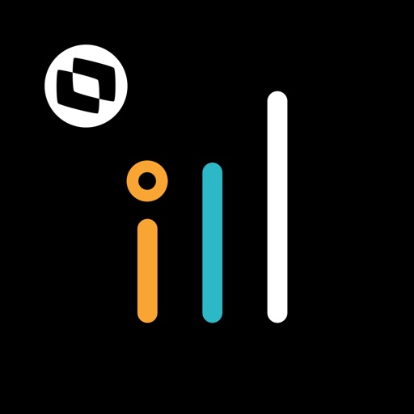

<ion-app>
    <ion-menu side="start" contentId="content1" class="my-custom-menu">
      <div class="logo-section">
        <div class="logo-section__wrapper">
          
          <h3 class="logo-section__title">{{ aliasMenu }}</h3>
        </div>
      </div>
      <ion-content>
        <ion-list>
          <ion-menu-toggle auto-hide="false" *ngFor="let page of pages">
            <ion-item [routerLink]="page.path" routerDirection="root"
                      [class.active-item]="activePath === page.path">
            <ion-icon [name]="page.icon" slot="start"></ion-icon>
            
            {{page.name}}              
            </ion-item>
          </ion-menu-toggle>
        </ion-list>
      </ion-content>

      <ion-footer no-lines>
        <ion-list>
            <ion-item no-lines (tap)='showConfirmLogout()'>
                <ion-icon name="power" slot="start"></ion-icon>
                {{'MENU.LOGOUT' | translate}}
            </ion-item>
        </ion-list>
    </ion-footer>
    </ion-menu>
    <ion-router-outlet id="content1"></ion-router-outlet>  
</ion-app>